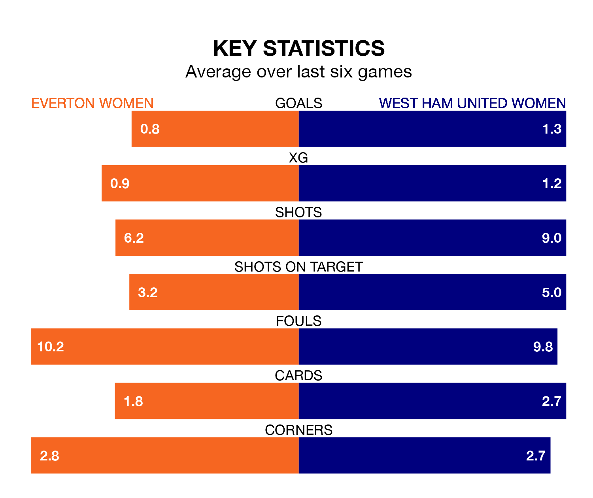

Struggling Everton Women face West Ham United Women at Walton Hall Park on Sunday looking to build on a win in their last league outing.
After securing all three points with a 0-3 victory over Chelsea Women on February 4, the Toffees sit 10th in the FA Women's Super League.
They travel to play a West Ham United side ninth in the standings, who also won their last match, 2-1 against Arsenal Women.
In the last 10 years, Everton and West Ham United have played each other on nine occasions. Everton won four of them, West Ham United three, and they drew twice.
On average, the Toffees scored 1.1 goals and the Hammers 0.9 in those matches.
Their last meeting was on December 10, when Everton won 1-0 away.
In Courtney Brosnan, Everton can rely on one of the league's safest pair of hands. She has kept two clean sheets in her 11 appearances this season in the FA Women's Super League.
In West Ham United's net, Mackenzie Arnold has one clean sheet in 10 games. She has conceded a goal every 47 minutes, 10% more often than the 50 minutes between goals for Brosnan.
The Toffees are in disappointing form in the FA Women's Super League, with two wins and four losses from their last six games.
With two wins and a draw over that period, the Hammers' form is slightly better – they have taken seven points from 18, compared to the hosts' six.
With 10 goals in 13 games so far this season, Everton are the league's lowest scorers with 0.8 goals per game. And they are conceding more than average, letting in 25 goals at a rate of 1.9 per game.
The away team are also below average scorers, with 1.2 goals per game, compared to a league average of 1.6. They have conceded 2.1 goals per game.
Updated: 10:28 (UTC), 06/02/24